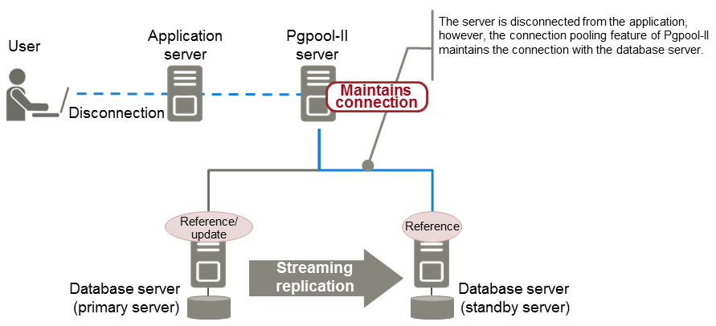

Pgpool-II is software that is placed between the database server and database client to relay the connection.
Pgpool-II provides the failover, connection pooling, and load balancing features for use during streaming replication.
Failover
In PostgreSQL, a database can be made redundant (building a high availability system) using synchronous streaming replication.
If the database server of either the primary server or standby server fails or is no longer accessible when using synchronous streaming replication, jobs will stop.
Failover monitors the status of each database and automatically disconnects the server when an error occurs. As a result, jobs can continue uninterrupted on the remaining server.
Connection pooling
This feature maintains (pools) the connection established with the database server, and reuses that connection each time a new connection with the same properties (user name, database, and protocol version) arrives.
Connection pooling reduces the connection overhead for the database server, improving throughput of the whole system.

Load balancing
This feature distributes reference queries to multiple database servers, improving throughput of the whole system.
By combining load balancing with the FUJITSU Enterprise Postgres database multiplexing feature or the PostgreSQL streaming replication feature, load on the database server is reduced.
See
Refer to "System configuration when using Pgpool-II" in the Installation and Setup Guide for Server for information on the server configuration when using Pgpool-II.
Refer to "Required Operating System" in the Installation and Setup Guide for Server for information on the operating environment of Pgpool-II.